Development Tools
Docker
1. Buka Terminal
(Abaikan jika sudah berada di dalam terminal)
2. Install docker, docker.io, dan docker-compose
Sintaks:
sudo apt-get install docker docker.io docker-compose
Development Environment
Mempersiapkan Development Environment
1. Buka terminal
2. Clone repositori doodba scafolding
Sintaks untuk ssh:
git clone -b <versi-odoo> git@github.com:open-synergy/doodba-scaffolding.git <nama-folder-development>
Sintaks untuk https:
git clone -b <versi-odoo> https://github.com/open-synergy/doodba-scaffolding.git <nama-folder-development>
Keterangan:
- versi-odoo: versi Odoo yang akan didevelop. Contoh: 8.0, 9.0
- nama-folder-development: nama folder yang akan menampung hasil clone. Bebas.
3. Masuk ke dalam folder nama-folder-development
Sintaks:
cd <nama-folder>
4. Perbesar disk size untuk inotify
Sintaks:
echo 16384 | sudo tee /proc/sys/fs/inotify/max_user_watches
5. chmod folder odoo/auto
Sintaks:
chmod -R ug+rwX odoo/auto
6. Sesuaikan environment variable UID dan GID
Sintaks:
export UID GID="$(id -g $USER)" UMASK="$(umask)"
7. Pull dan build docker image yang akan digunakan
Sintaks:
sudo docker-compose -f devel.yaml build --pull
8. Jalankan git-aggregator untuk melakukan clone odoo, ocb, dan OpenUpgrade codebase
Sintaks:
sudo docker-compose -f setup-devel.yaml run --rm odoo
Menjalankan Odoo Aplication Service
1. Buka Terminal
(Abaikan jika terminal sudah dibuka)
2. Masuk ke dalam folder
Sintaks:
cd <nama-folder-development>
(Abaikan jika sudah berada di dalam
3. Cek apakah docker service sudah berjalan
Sintaks:
sudo docker-compose -f devel.yaml ps
Berikut adalah hasil yang akan ditampilkan jika docker service tidak berjalan
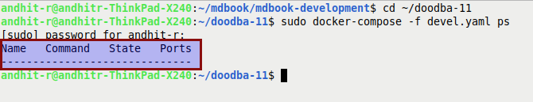
4. Jalankan docker service
Sintaks:
sudo docker-compose -f devel.yaml up
5. Buka Browser
Gunakan Google Chrome, Google Chromium, atau Mozilla Firefox
6. Buka URL Odoo
localhost:<versi-major-odoo>069
Keterangan:
- versi-major-odoo: versi odoo yang sedang didevelop. Contoh: untuk versi 12.0 port yang akan digunakan adalah 12069
Mendaftarkan Repositori Baru
1. Buka file /odoo/custom/src/repos.yaml
2. Daftarkan repositori
Tambahkan kode berikut:
<alias-repositori>:
defaults:
depth: $DEPTH_DEFAULT
remotes:
origin: <url-repositori>
target: origin $ODOO_VERSION
merges:
- origin $ODOO_VERSION
Keterangan (harus disesuaikan):
- alias-repositori: alias yang akan dipergunakan oleh repositori
- url-repositori: URL repositori. Dapat berbentuk SSH atau https
Contoh penambahan repositori OCA server tools dengan https:
oca-server-tools:
defaults:
depth: $DEPTH_DEFAULT
remotes:
upstream: https://github.com/OCA/server-tools.git
target: upstream $ODOO_VERSION
merges:
- upstream $ODOO_VERSION
Berikut adalah contoh kode:
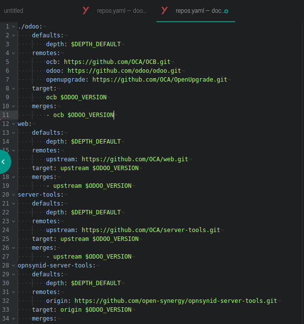
3. Buka file /odoo/custom/src/addons.yaml
4. Tambahkan entri addons dari repo baru yang mau digunakan
Sintaks untuk menggunakan hanya sebagian modul dalam repo:
<alias-repositori>:
- <module-yang-akan-digunakan-1>
- <module-yang-akan-digunakan-2>
- ...
- <module-yang-akan-digunakan-n>
Sintaks untuk menggunakan semua modul dalam repositori
<alias-repositori>:
- "*"
Contoh untuk menggunakan beberapa modul di repo OCA server tools:
oca-server-tools:
- date_range
- shell
Contoh untuk menggunakan semua modul di repo OCA server tools:
oca-server-tools:
- "*"
Berikut adalah contoh kode:
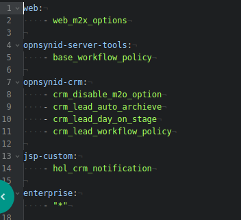
5. Jalankan git-aggregator
Sintaks:
sudo docker-compose -f setup-devel.yaml run --rm odoo
6. Restart Container Odoo
Sintaks:
sudo docker-compose -f devel.yaml restart odoo
7. Update module list di Odoo
Modul-modul yang ada di addons.yaml akan tampil di daftar module
Github
Travis CI
Menambahkan Konfigurasi Travis Di Repo
1. Masuk ke dalam direktori repositori dengan menggunakan terminal
2. Copy file .travis.yml dari repo OCA/maintener-quality-tools.
Jalankan sintaks berikut di terminal
wget https://raw.githubusercontent.com/OCA/maintainer-quality-tools/master/sample_files/.travis.yml .
3. Add, commit, dan push .travis.yml
git add -A .travis.yml \
&& git commit -m "Add travis.yml" \
&& git push origin 12.0:12.0
Kode di atas mengasumsikan:
- Tidak ada branch protection rule yang aktif pada pengaturan branch di github.com
- Branch yang akan diberikan konfigurasi travis adalah branch 12.0
Silahkan lakukan penyesuaian yang diperlukan.
Mendaftarkan Repository Github Ke Travis
1. Buka travis-ci.org dan login dengan menggunakan Github.
Abaikan jika Anda sudah berada pada travis-ci.org
2. Klik profile picture Anda pada bagian atas-kanan halaman
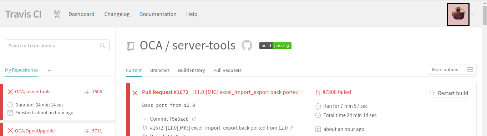
3. Klik menu Setting yang muncul pada profile picture Anda
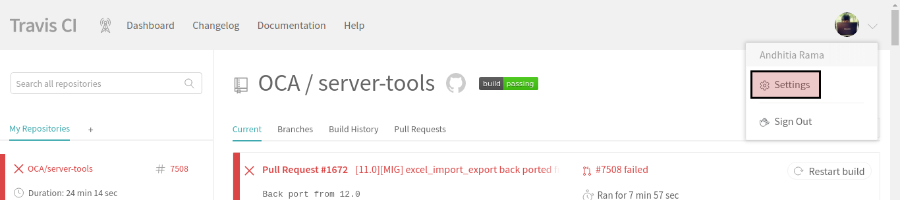
4. Klik tombol Sync account
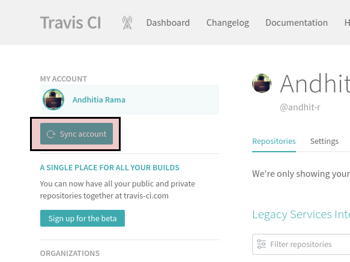
5. Pindah ke halaman organisasi apabila Anda akan mendaftarkan repository milik organisasi. Abaikan langkah ini apabila Anda akan mendaftarkan repository milik pribadi.
Klik salah satu nama organisasi pada bagian Organizations

6. Aktifkan Repository
Aktifkan toogle yang berada pada bagian kanan nama repository yang Anda inginkan.
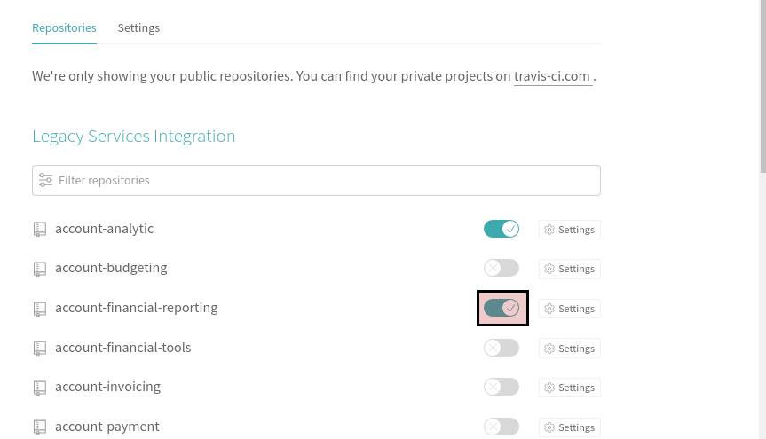
Unittest
Referensi:
- Odoo 8.0 Testing Modules
- Odoo 9.0 Testing Modules
- Odoo 10.0 Testing Modules
- Odoo 11.0 Testing Modules
- Odoo 12.0 Testing Modules
- Python 2 Unittest
- Python 3 Unittest
OpenUpgradeLib
Referensi:
Kesepakatan Coding
Object General
Pesan Error Dapat Ditranslasi
Pesan error harus dapat ditranslasi
CONTOH KODE
Import library untuk tranlasi
Pesan error ditranslasi
Method Prepare Untuk create Dan Write
Buat method untuk menyiapkan dictionary pada method create atau write. Method hanya dibuat apabila dictionary yang digunakan terdiri dari lebih dari satu pasangan key-value.
CONTOH KODE METHOD PREPARE DIGUNAKAN
CONTOH KODE METHOD PREPARE TIDAK DIGUNAKAN
Method Prepare Untuk Domain
Buat method untuk menyiapkan dictionary domain.
KETENTUAN STANDAR
- Nama method diawali dengan _prepare_domain
- Method hanya dibuat apabila domain memerlukan Dynamic Value
CONTOH KODE METHOD PREPARE DOMAIN
Method Untuk Assign Nilai
Buat method untuk menentukan satu nilai yang akan diassign apabila algoritma terdiri lebi dari satu baris
CONTOH KODE DENGAN METHOD
CONTOH KODE TANPA METHOD
Konfirmasi Ketika Klik Tombol
Setiap tombol harus memiliki dialog konfirmasi ketika diklik.
KETENTUAN STANDAR
- Konfirmasi dibuat hanya untuk tombol-tombol yang mengubah State/Workflow
- Untuk tombol-tombol yang membuka window action dikecualikan
- Pesan konfirmasi = "{state} Data. Are you sure?"
CONTOH KODE KONFIRMASI TOMBOL DIGUNAKAN
CONTOH KODE KONFIRMASI TOMBOL TIDAK DIGUNAKAN
User Interface General
Label Menu
Menu tanpa action selalu dalam bentuk tunggal
Contoh Benar
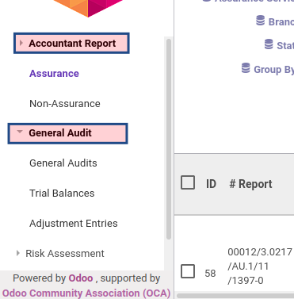
Contoh Salah
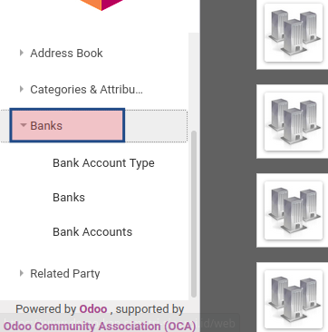
Menu dengan window action bukan wizard selalu dalam bentuk jamak
Contoh Benar
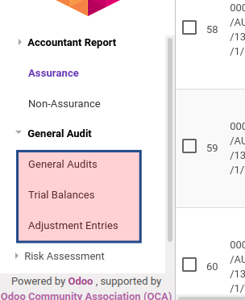
Contoh Salah
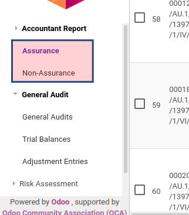
Menu dengan window actiom wizard selalu dalam bentuk tunggal
Contoh Benar
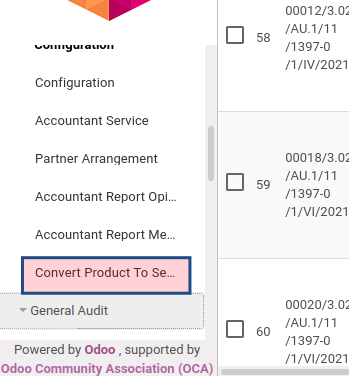
Master Data
Field-field Wajib
Field-field berikut wajib ada disetiap master data:
- name
- code
- active
- description
- sequence
Contoh Kode
Order
Apabila tidak ada instruksi tambahan maka order selalu berdasarkan sequence, id
Contoh Kode
Name Search
Data harus dapat dicari dengan menggunakan field:
- name
- code
Contoh Kode
Header Pada Form View
Tampilan form untuk master data harus memiliki header, walaupun tidak ada isinya
Contoh Kode Untuk Header Tanpa Element
Contoh Kode Untuk Header Dengan Element
Notebook Pada Form View
Tampilan form view harus memiliki notebook. Page pertama untuk description.
Contoh Kode
Smartbutton Pada Form View
Tampilan form untuk master data harus memiliki element div untuk menampung smartbutton, walaupun tidak ada isinya
Contoh Kode Tanpa Element
Contoh Kode Dengan Element
Field-field Wajib Pada Tree View
Berikut adalah field-field wajib yang harus ditampilkaan pada tree view:
- sequence
- code
- name
Field sequence harus memiliki widget handle
Contoh Kode
Field-field Yang Dapat Dicari Pada Search View
Pada search view, terdapat 2 metode pencarian:
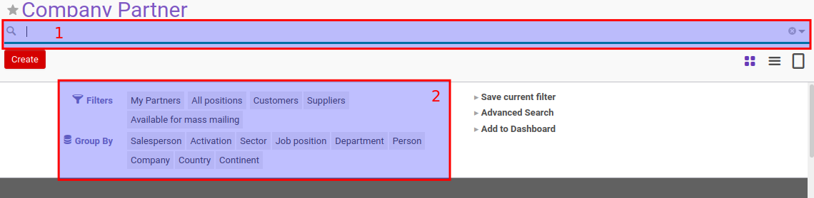
- Menggunakan Search Bar
- Menggunakan Filter Bar
Field-field yang wajib dapat dicari pada Search Bar
- name
- code
- type: many2one
Field-field yang wajib dapat dicari pada Filter Bar:
- state
- type: many2one
- type: date (day, week, month, year)
CONTOH KODE SEARCH BAR
CONTOH KODE FILTER BAR
Transaksi
Daftar Abstract Model Yang Digunakan
Standar abstract model yang digunakan pada object transaksi adalah:
- mail.thread
- base.sequence_document
- base.workflow_policy_object
- base.cancel.reason_common
- tier.validation
Contoh Kode
Field-field Wajib
Restriksi Unlink
Data transaksi hanya dapat dihapus apabila:
- Status == draft
- Nomor dokumen == /
atau dictionary dengan key force_unlink digunakan ketika menjalankan unlink
CONTOH KODE
Name Get
display_name sama dengan name apabila name != / . display_name sama dengan *<<ID Database Data>> apabila name == /
CONTOH KODE
Pemberian Nomor Dokumen
Nomor dokumen selalu diberikan setelah proses multiple approval selesai dilakukan
CONTOH KODE
Pemberian nomor dokumen selalu harus memperhatikan sequence range.
Field id Pada Tree View
Selalu munculkan field id sebagai kolom pertama pada tree view
CONTOH KODE
Field display_name name Pada Tree View
Selalu munculkan field display_name sebagai kolom kedua pada tree view
CONTOH KODE
Field name dan display_name Pada Form View
Munculkan field name hanya pada saat di-edit dan field display_name hanya pada saat di-baca
CONTOH KODE
Header Pada Form View
Tampilan form untuk transaksi harus memiliki header, walaupun tidak ada isinya
CONTOH KODE ELEMEN HEADER DENGAN ISI
CONTOH KODE ELEMEN HEADER DENGAN ISI
Smart Button Pada Form View
Tampilan form untuk transaksi harus memiliki div untuk meletakan smartbutton, walaupun tidak ada isinya
CONTOH KODE ELEMEN DIV SMARTBUTTON TANPA ISI
Notebook Pada Form View
Tampilan form untuk transaksi harus memiliki elemen notebook
CONTOH KODE
OpenChatter Pada Form View
Tampilan form untuk transaksi harus memiliki OpenChatter
KETENTUAN STANDAR
- Model mail.thread harus diinherit
CONTOH KODE
Prosedur Pengerjaan Task
Persiapan Awal
1. Installasi git
Pada terminal, jalankan sintaks berikut:
$ sudo apt install git
2. Set global user name dan email
Pada terminal, jalankan sintaks berikut:
$ git config --global user.name "{nama}"
$ git config --global user.email "{email}"
Cek apakah global user name dan email sudah terkonfigurasi
$ git config --list
3. Membuat token github
-
Buka github github.com dan login.
-
Klik icon profile pada kanan atas, dan klik menu Settings.
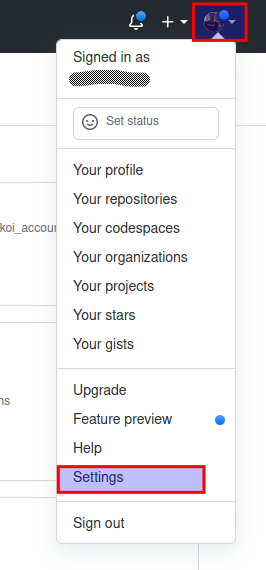
- Klik menu Developer settings.
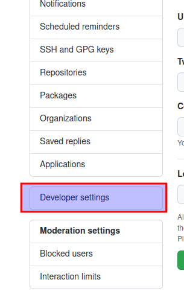
- Klik menu Personal access tokens dan klik tombol Generate new token.
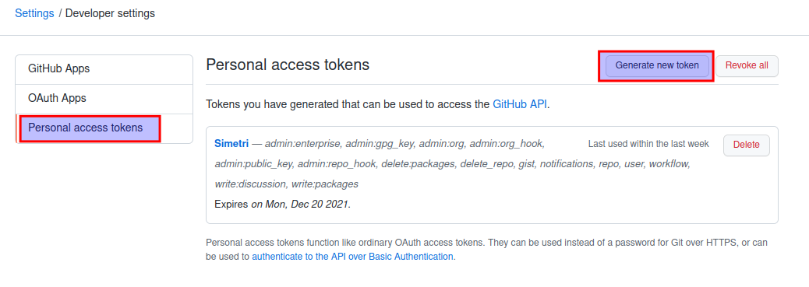
- Isi form kemudian klik tombol Generate token. Penjelasan pengisian form sebagai berikut:
- Note - Deskripsi penggunaan token
- Expiration - Masa aktif token. Silahkan isi sesuai kebutuhan
- Select scopes - Check semuanya
- Copy token dan simpan di tempat yang aman
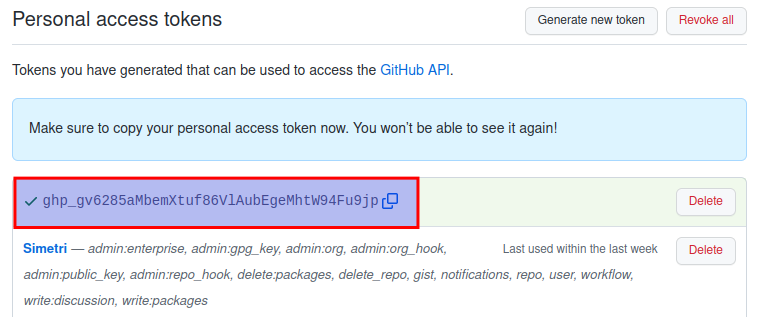
Note: Token akan berlaku sesuai dengan pengisian Expiration. Apabila token expire, maka user wajib melakukan Regenerate Token untuk memperbarui token.
Melihat Task
1. Buka website simetri-sinergi.id dan login.
2. Klik menu Project - Tasks - All Tasks
3. Sesuaikan filter pada filter bar. Filter yang perlu dipilih adalah sbb:
- Filter - On Running Timebox
- Stage - To Do, Doing, Internal Review
- Assign To - {sesuaikan dengan user}
- Group By - Stage
Note: Filter diatas merupakan standar filter yang biasa digunakan dan dapat disesuaikan sesuai dengan kebutuhan apabila diperlukan.
Merubah Status Task Menjadi Doing
1. Pilih task dengan status To Do
2. Pada status bar , klik status Doing
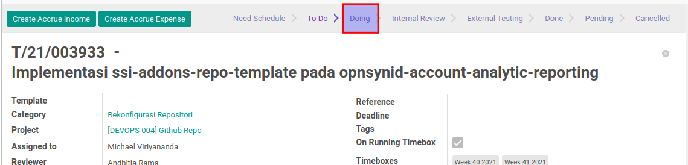
Clone Remote Repository
Note: Abaikan proses ini apabila remote repository sudah di-clone
1. Buka github opensynergy github.com/open-synergy dan login.
2. Pada Search Bar, cari repository yang hendak di-clone.
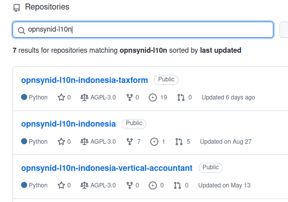
3. Klik Tombol Code, pilih HTTPS, kemudian copy alamat repositorynya.
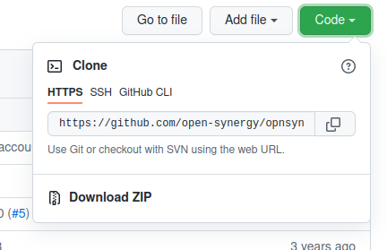
4. Clone Repository
Pada terminal, jalankan sintaks berikut:
cd {nama-folder-odoo-8}/odoo/custom/src
git clone -b {odoo-version} {alamat-repo-pada-langkah-3}
Fetch dan Rebase Remote Repository
1. Masuk ke direktori repository
Pada terminal, jalankan sintaks berikut:
cd {nama-folder-odoo-8}/odoo/custom/src/{nama-remote-repository}
2. Checkout branch {odoo-version}
Pada terminal, jalankan sintaks berikut:
git checkout {odoo-version}
Note: Abaikan apabila branch {odoo-version} sudah tercheckout
3. Fetch remote repository
Pada terminal, jalankan sintaks berikut:
git fetch origin
4. Rebase remote repository
Pada terminal, jalankan sintaks berikut:
git rebase origin/{odoo-version}
Membuat Branch Baru
1. Masuk ke direktori repository
Pada terminal, jalankan sintaks berikut:
cd {nama-folder-odoo-8}/odoo/custom/src/{nama-remote-repository}
Note: Abaikan apabila sudah masuk ke dalam direktori repository
2. Membuat Branch Baru
Pada terminal, jalankan sintaks berikut:
git checkout -b {odoo-version}-T{nomor-task} origin/8.0
Contoh:
git checkout -b 8.0-T003432 origin/8.0
Push Remote Repository
Note: Langkah ini dilakukan ketika task sudah selesai dikerjakan
1. Masuk ke direktori repository
Pada terminal, jalankan sintaks berikut:
cd {nama-folder-odoo-8}/odoo/custom/src/{nama-remote-repository}
Note: Abaikan apabila sudah masuk ke dalam direktori repository
2. Git Add
Pada terminal, jalankan sintaks berikut:
git add -A
3. Install pre-commit
Pada terminal, jalankan sintaks berikut:
pre-commit install
Note: Abaikan apabila pre-commit sudah terinstall
4. Git Commit
Pada terminal, jalankan sintaks berikut:
git commit -m "[nama-module] Task: {nama-task}"
Note: Langkah 4.1 diperlukan apabila pre-commit tidak jalan
4.1 Uninstall dan install pre-commit
Pada terminal, jalankan sintaks berikut:
pre-commit uninstall
pre-commit install
5. Git Push
Pada terminal, jalankan sintaks berikut:
git push origin {nama-branch}:{nama-branch}
Note: Nama branch adalah nama branch yang sudah dibuat pada Membuat Branch Baru
6. Konfirmasi Git Push
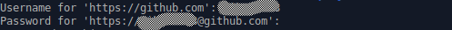
- Username - Isi username dengan user github
- Password - Isi password dengan Token Github yang sudah dibuat pada Persiapan Awal
Melakukan Pull Request
1. Buka github opensynergy github.com/open-synergy dan login.
2. Pada Search Bar, cari repository yang hendak dibuat Pull Requestnya.
3. Klik tombol Compare & pull request
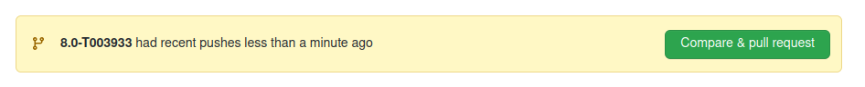
4. Membuat Pull Request
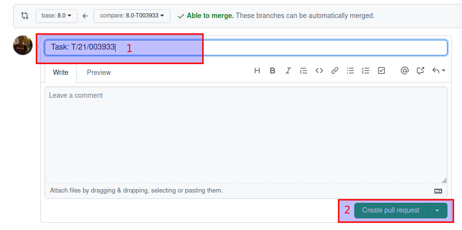
- 1 - Isi deskripsi dengan nomor task
- 2 - Klik Tombol Create pull request
Merubah Status Task Menjadi Internal Review
Note: Langkah ini dilakukan apabila hasil check pada Pull Request sudah berwarna hijau
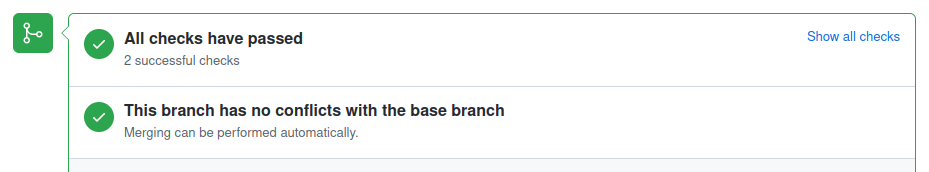
1. Pilih task dengan status Doing
2. Pada status bar , klik status Internal Review
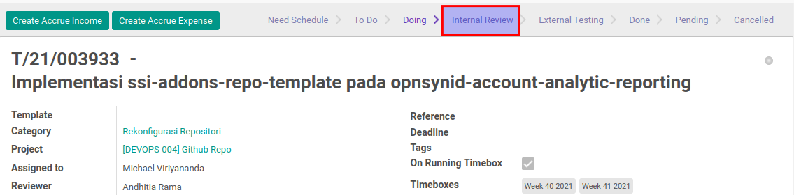
Prosedur Penyelesaian Task
Multiple Approval
Version 8.0
11.0
Dependencies
Menambahkan dependencies module ssi_multiple_approval_mixin di file manifest.py
CONTOH KODE
Approval Template
Menambahkan object pada approval.template
KETENTUAN STANDAR
- Nama file python object harus approval_template.py
CONTOH KODE
Object
Pada object, ada beberapa hal yang perlu dilakukan:
1. Inherit object mixin.multiple_approval
CONTOH KODE:
2. Sesuaikan variable _approval_
Default variable yang tersedia:
-
_approval_state_field = "state"
Isi variable _approval_state_field dengan nama field state -
_approval_state = "confirm"
Isi variable _approval_state dengan value statenya (cth: draft,confirm,dst)
Variable ini menentukan ketika di state mana approval akan dilakukan. -
_approval_from_state = "draft"
Isi variable _approval_from_state dengan value statenya (cth: draft,confirm,dst)
Variable ini menentukan state sebelum approval dilakukan. -
_approval_to_state = "confirm"
Isi variable _approval_to_state dengan value statenya (cth: draft,confirm,dst)
Variable ini menentukan state setelah approval dilakukan. -
_approval_cancel_state = "cancel"
Isi variable _approval_cancel_state dengan value statenya (cth: draft,confirm,dst)
Variable ini menentukan state yang digunakan untuk cancel. -
_approval_reject_state = "reject"
Isi variable _approval_reject_state dengan value statenya (cth: draft,confirm,dst)
Variable ini menentukan state yang digunakan untuk reject.
CONTOH KODE:
3. Override method approval
Tambahkan method action_request_approval(), pada method action sesuai dengan isi dari variable _approval_state
CONTOH KODE:
Isi dari variable _approval_state = "confirm"
Maka kita perlu menambahkan method action_request_approval() pada method action dari state confirm
4. Override method action_approve_approval
Override method action_approve_approval dan tambahkan method action sesuai dengan isi dari variable _approval_to_state
CONTOH KODE:
Isi dari variable _approval_to_state = "open"
Maka kita perlu menambahkan method action_open() pada method action_approve_approval
View
View yang perlu ditambahkan adalah sbb:
1. Tambahkan view setelah header
CONTOH KODE:
2. Pada notebook, tambahkan page approval
CONTOH KODE:
Troubleshoot
Docker
Error pada saat invoke
Error ini biasanya terjadi pada saat akan menjalankan sintaks invoke img-pull pada docker-copier-template.
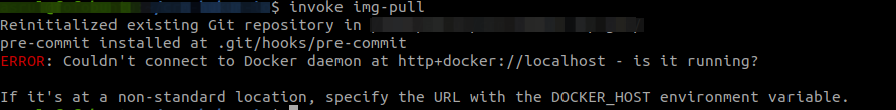
Langkah - langkah untuk menyelesaikan error:
1. Edit file konfigurasi Docker
Sintaks:
sudo pico /etc/systemd/system/docker.service.d
Apabila folder docker.service.d dan file docker.conf tidak ada, silahkan buat folder dan file tersebut menggunakan sintaks:
sudo mkdir /etc/systemd/system/docker.service.d
sudo touch /etc/systemd/system/docker.service.d/docker.conf
2. Isi file docker.conf
[Service]
ExecStart=
ExecStart=/usr/bin/dockerd -H tcp://0.0.0.0:2375 -H unix:///var/run/docker.sock
3. Reload config
Sintaks:
systemctl daemon-reload
4. Restart docker
Sintaks:
systemctl restart docker.service
5. Check status docker service
Sintaks:
systemctl status docker.service
Pastikan docker sudah di bind /usr/bin/dockerd -H tcp://0.0.0.0:2375 -H unix:///var/run/docker.sock
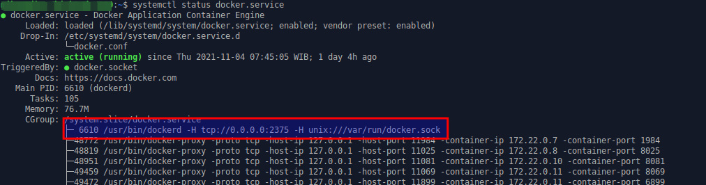
6. Menjalankan invoke img-pull dengan DOCKER_HOST
Sintaks:
cd {nama-folder-docker-copier-template}
export DOCKER_HOST=tcp://0.0.0.0:2375
invoke img-pull
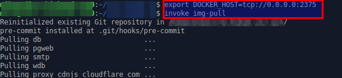
Error pada git-aggregate
Error ini biasanya terjadi ketika menjalankan sintaks invoke git-aggregate pada docker-copier-template.
Masalah ini muncul karena ada beberapa repository yang bersifat private, sehingga untuk meng-clone repo tersebut dibutuhkan SSH Keys
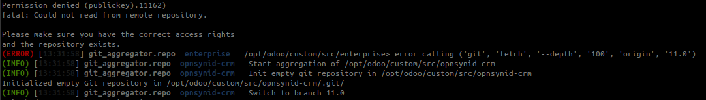
Langkah - langkah untuk menyelesaikan error:
1. Membuat SSH Key
Sintaks:
ssh-keygen -t rsa -b 4096
NOTE: Abaikan apabila SSH Key sudah pernah dibuat
2. Copy SSH Key ke dalam docker-copier-template
Sintaks:
cat {lokasi-ssh-key}/id_rsa > {docker-copier-template}/odoo/custom/ssh/id_rsa
cat {lokasi-ssh-key}/id_rsa.pub > {docker-copier-template}/odoo/custom/ssh/id_rsa.pub
NOTE: {lokasi-ssh-key} tergantung pada saat pembuatan SSH keys pada Langkah - 1 (Default: {home}/.ssh/id_rsa)
3. Daftarkan SSH Key pada github
-
3.1 Buka github github.com dan login.
-
3.2. Klik icon profile pada kanan atas, dan klik menu Settings.
- 3.3. Klik menu SSH and GPG Keys.
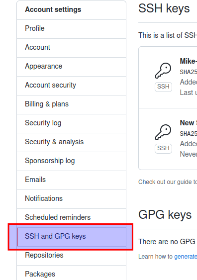
- 3.4. Klik tombol New SSH Key.
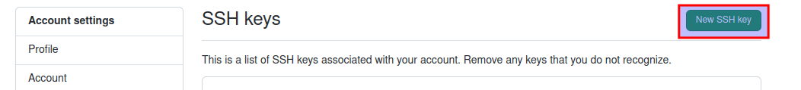
- 3.5. Isi Form
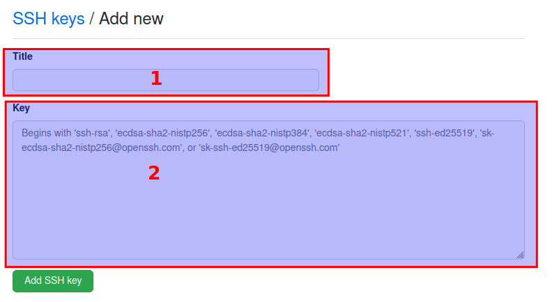
Penjelasan:
1. Isi title sesuai kebutuhan
2. Isi dengan id_rsa.pub yang sudah dibuat pada Langkah - 1
- 3.6. Klik Tombol Add SSH key
4. Re-Build Docker Copier Template
Sintaks:
invoke img-build
5. Jalankan git-aggregate
Sintaks:
invoke git-aggregate